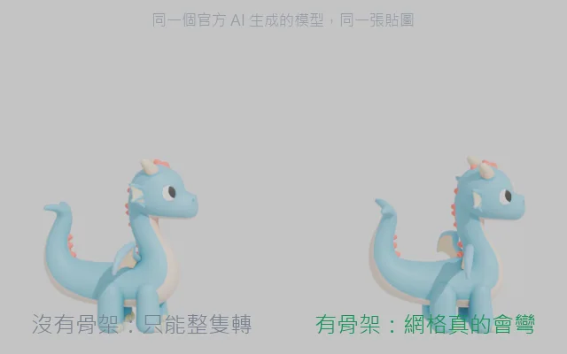
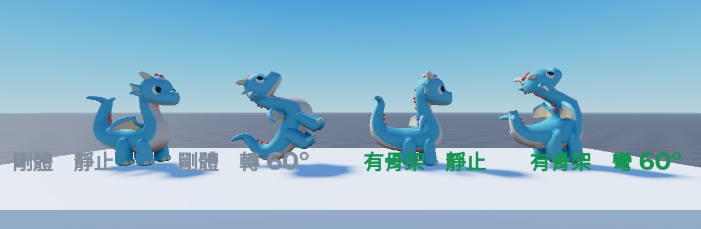

現在做一個能玩的 Roblox 遊戲已經不難了。難的是做出來不像方塊人。 這套方法讓 AI 幫你寫程式，同時把好看的模型變成真的會動的角色， 而你不必去學建模、綁骨架或 Luau。
在 Windows 上實測過。Mac 尚未驗證。
Roblox 內建的 AI 可以生出很好看的模型，但它生不出骨頭。 沒有骨頭，角色就只能整隻轉，動起來像一塊石頭。
這套方法把缺的那一段接起來：把官方生的模型讀出來、綁上骨架、再送回 Roblox。 左右兩隻是同一個模型、同一張貼圖，差別只在右邊經過了這條管線。


不是因為它們不重要，而是因為這三件事本來就可以交給 AI 或腳本做。
模型交給 Roblox 內建的 AI 生，骨架與權重由腳本自動算。你不必開 Blender、不必知道什麼是權重，也不必為了一隻會動的角色去買外掛服務。
Luau、事件、存檔、多人同步，這些由 AI 寫。你看得懂的是遊戲不是程式碼，所以你的工作是檢查遊戲對不對，不是檢查程式對不對。
建場景、擺物件、跑測試，AI 透過 Roblox 官方的工具直接動手。你不需要記住哪個面板在哪裡、哪個屬性叫什麼名字。
這三件事沒有人能替你做，因為它們都需要一個真的想玩這個遊戲的人。
AI 不會一聽到「我想做一個賽車遊戲」就開始寫。它會先反問你五輪：誰在玩、玩家反覆做的動作是什麼、為什麼會想再玩一次。
做出來之後你要真的進去玩。好不好玩、卡不卡、有沒有搞不懂的地方，這些只有人判斷得出來，量測數據永遠量不到。
你不需要說「這個函式寫錯了」。你只要說「這兩招看起來一模一樣」或「我不知道現在該去哪裡」，那就是下一版的規格。
畫面好看只是其中一半。這裡是用同一套方法做完、而且已經上線的遊戲，以及它踩過的坑。
雙陣營對戰，搶下戰場上的據點，佔得越多打得越痛。人數不夠時由 bot 補位，一個人也玩得起來。
五倍大的自然地形、河谷雙橋、四百多棵樹，還有平板專用的陀螺儀瞄準（傾斜平板就能轉視角）。
這裡誠實列出來，免得你裝到一半才發現。
跟你協作的 AI。需要付費訂閱，並且會用到終端機輸入幾行指令。
免費。裝好就行，你不需要學它的操作介面。
免費。讓 AI 寫的程式自動同步進 Studio 的小工具，starter kit 裡有安裝說明。
你不需要讀完裡面的文件。那些文件是寫給 AI 看的護欄，它會自己讀。
下載並解壓縮 starter kit
在那個資料夾裡打開 Claude Code
跟它說：先讀 START-HERE.md
它會帶你裝環境、跑通範例，然後開始問你想做什麼遊戲
免費。不需要註冊，也不會收集你的任何資料。
或是直接抓原始碼：github.com/LeeAN-Hsuan/notblocky
把這個網址給你的 Claude Code，它會自己 clone 下來，之後也拿得到更新。